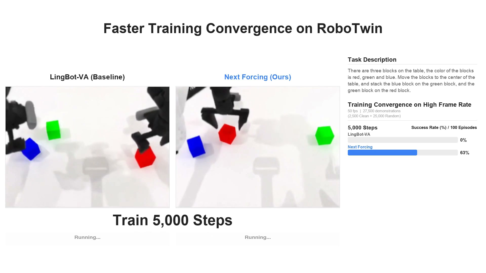
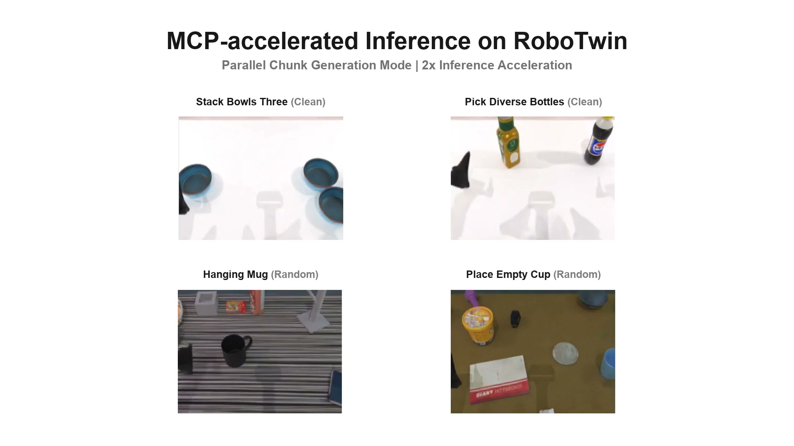
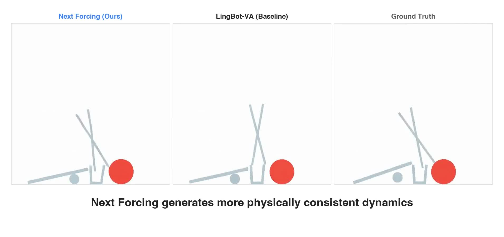

Technical Deep Dive · World Action Model · Causal Video
Next Forcing：让 WAM 不再只会复制下一帧
高帧率视频里，相邻 chunk 几乎一样。普通 causal WAM 只监督下一块，很容易把“预测动力学”退化成“复制外观”。Next Forcing 没有改掉 LingBot-VA 的主干，而是在训练期接出三层轻量 MCP 分支，分别预测更远的未来 chunk，用多时间尺度目标把动态信息压回主模型；推理时可以全部删除，也可以保留第一层并行生成两个 chunk。
0. 一句话结论 #
Next Forcing 解决 causal video/WAM 在高帧率下只靠相邻外观复制就能完成 next-chunk denoising 的弱监督问题：它用一条 next$^1$ → next$^2$ → next$^3$ 的轻量因果 MCP 链预测多个未来 chunk，迫使主干学习跨 chunk 动力学；RoboTwin 达到 94.1/93.5% Clean/Random，50 fps 下按训练 step 约快 2.3× 收敛，但增加约 1.6B 训练期参数与额外计算，论文声称的 2× 并行推理路径目前尚未开源，也没有报告端到端 wall-clock speedup。
核心 insight：问题不只是 teacher forcing 导致 exposure bias，而是监督的时间跨度太短。当 $x_{i+1}\approx x_i$ 时，下一 chunk 的 loss 对动力学几乎没有辨识力；同时预测 $x_{i+2}$、$x_{i+3}$，才会让速度、接触、物体状态和动作后果成为完成任务所需的信息。
普通 causal WAM:
context → denoise current chunk
shortcut: copy nearby appearance
Next Forcing training:
context → main predicts current chunk
↘ MCP-1 predicts next^1
↘ MCP-2 predicts next^2
↘ MCP-3 predicts next^3
Inference A: delete all MCP modules
Inference B: main + MCP-1 produce two chunks per autoregressive step1. 论文定位：它改训练目标，不是重做 WAM 架构 #
Next Forcing 建在 LingBot-VA 上。底座是 causal video-action world model：给定语言指令 $\ell$、历史视频 chunk $x_{\le i}$ 和过去动作 $a_{<i}$，视频流生成下一段视觉变化，动作流读取更新后的视觉状态并预测动作。
视频与动作 token 在 30 层 Wan2.2 Transformer 中联合交互。MCP 只显式预测视频 latent，不另设 action MCP；动作受益来自共享主干和 video-action cross-modal attention。
| 方法 | 主要改动 | 学习信号 | 推理 |
|---|---|---|---|
| LingBot-VA | causal joint video-action model | 当前 chunk video/action flow loss | 逐 chunk |
| Diffusion Forcing | token 独立噪声级别 | 序列扩散与因果生成统一 | 逐步 rollout |
| Fast-WAM | 质疑 test-time imagination 必要性 | 训练期 world representation | 可绕过未来视频 |
| Next Forcing | 多 future-chunk 辅助分支 | next$^1$/next$^2$/next$^3$ flow losses | 可删除，或并行两 chunk |
因此它最准确的定位是：面向 causal video diffusion/WAM 的 multi-token-prediction 式深监督。它不改变动作表示、不增加 planner，也不解决长时记忆。
2. 方法总览：主干做当前，三层 MCP 看更远 #

- 把视频 VAE latent 按 $M$ 帧切成 chunk，训练时随机采样 $M\in\{1,2,3,4\}$。
- 主模型使用 clean history 和当前 noisy chunk 做 flow matching；动作流同步预测 robot action。
- 从主干第 4、12、20、30 层收集 video hidden states，拼接后用两层 MLP 压回隐藏维度 $d$。
- 把 future target 沿时间移动 $kM$ 帧，得到 next$^k$ 监督；每个深度独立采样噪声和 timestep。
- MCP-$k$ 将上一层 future representation 与自己 noisy target 的 patch embedding 拼接，再投影到 $d$。
- 每个深度默认通过 3 个 Wan Transformer blocks，并把输出交给更远的 MCP。
- 主 video loss、action loss 和三个加权 MCP loss 一起反传。
| 张量 | 典型形状 | 含义 |
|---|---|---|
| 视频 latent | [B, C, F, H, W] | VAE 时空 latent |
| patch tokens | [B, N, d] | $N=F'H'W'$ |
| 收集特征 | 4 × [B, N, d] | 第 4/12/20/30 层 video states |
| fusion 输入 | [B, N, 4d] | 沿 channel 维拼接 |
| $h_{\mathrm{fuse}}$ | [B, N, d] | 两层 MLP 压缩 |
| 每层 MCP 输入 | [B, N, 2d] → [B, N, d] | 上一层状态 + noisy future |
3. 关键创新点 #
3.1 多 chunk 目标：用时间距离打破 appearance shortcut
旧方法为什么不行：50 fps 下相邻目标的物体外观、背景和相机位姿几乎相同。模型从 clean context 抄外观，再修局部噪声，就能降低 next-chunk MSE；这不要求理解速度、接触或动作后果。
它怎么改：对深度 $k\in\{1,2,3\}$ 构造时间位移后的目标：
源码按 frame_shift=(k+1)*chunk_size 在 [B,C,F,H,W] 时间轴切片；末尾复制最后一帧保持形状，但用 valid_mask 从 loss 中剔除。
为什么有效：更远目标与当前外观差异更大。要同时解释 next$^1$、next$^2$、next$^3$，表征必须保留变化方向与未来可达状态。
代价/限制：时间跨度仍只有 3 个 chunk；fps、chunk size 或运动速度变化时，固定 depth 对应的物理时间也会变化。
3.2 独立噪声 + 更高 timestep shift：防止 MCP 自己抄答案
旧方法为什么不行：future branch 若看到低噪声目标，可以独立做局部 denoising，主干不必学习未来动力学。
每个深度独立采样噪声，并设置 $s_{\mathrm{main}}=5$、$s_{\mathrm{mcp}}=10$：
$s$ 越大越偏向高噪声，MCP 只能更多依赖主干和上一层 hidden state。把 MCP shift 从 10 降到 5，Clean success 从 85.8 降到 83.2。
代价/限制：高噪声增加优化难度，shift 与 loss weight 强耦合。
3.3 多层特征融合：让远期 loss 真正进入主干
源码为 Linear(4d,d) → SiLU → Linear(d,d)，配置零基索引 [3,11,19,29]。移除 fusion 后，Clean success 从 85.8 降到 83.6。
代价/限制：要保存四层激活，训练显存增加；论文未报告 activation memory 或每 step 时间。
3.4 因果 MCP 链：next$^2$ 建在 next$^1$ 表征上
每层的输出既投影为该深度 flow prediction，也作为下一深度的 previous_hidden_states。它更像展开三步的 latent transition chain，而不是三个平行 heads。
代价/限制：误差随 depth 累积，所以推理只保留 depth-1，不使用 depth-2/3。
3.5 Future-aware RoPE 与共享 causal mask
MCP-$k$ 的 future tokens 使用移动后的时空 grid id。Noisy target 可看严格在前的 clean chunks，也可看同 chunk noisy tokens；clean tokens 不能看 noisy target。源码把 future grid、clean video grid、action grid 拼接计算 RoPE，既表达未来位置，又避免 clean answer 泄漏。
4. 训练和推理流程 #
4.1 一次训练 step
- 数据提供语言 embedding、视频 latent、动作序列和 action mask。
- 随机采样
chunk_size∈[1,4]，并随机采样 attention window 4–64。 - 主视频 latent 由 shift=5 scheduler 加噪；clean history 以 0.5 概率扰动，减少直接复制。
- 动作使用独立 scheduler 加噪，padding 由 mask 排除。
- 三个 MCP depth 分别移动 $M,2M,3M$ 帧，用 shift=10 scheduler 独立加噪。
- 30 层主干联合处理 video、action 和 text，并收集四层 video hidden states。
- 三个 MCP 模块串行前向，输出三个 future velocity predictions。
- 主 video、action 与 MCP losses 相加，统一反传。

4.2 Zero-overhead inference
load trained checkpoint
→ delete mcp_hidden_fuser
→ delete mcp_input_projections
→ delete all mcp_blocks
→ standard LingBot-VA rollout这不是蒸馏到另一个模型。MCP loss 训练时已经更新主干；推理时直接删除辅助参数。官方当前 server 使用 disable_mcp=True，只实现这一模式。
4.3 Parallel chunk generation
one denoising trajectory:
main model → current chunk x_i
MCP depth-1 → next chunk x_{i+1}
accept both → autoregressive index advances by 2Depth-1 只有 3 个 blocks，相比 30 层主干很轻，作者将顺序 denoising 次数减半称为 2× acceleration。Depth-2/3 不使用，因为更远预测会积累漂移。

需要严格区分：表 4 只验证 2-chunk rollout 的成功率接近标准推理，没有给出 latency、吞吐、显存或真实机器人控制频率。当前代码也未发布该路径，所以“2×”是理论上的 autoregressive step reduction，不是已复测的 wall-clock 加速。
5. 关键公式逐项对齐 #
5.1 Flow matching 主任务
$x_0\in\mathbb R^{B\times C\times F\times H\times W}$ 是 clean VAE latent；$\epsilon$ 同形状；$t$ 按 frame 采样并广播到空间 token。网络输出 velocity，MSE 再乘 scheduler timestep weight。
5.2 Teacher-forced causal prediction
当前 chunk 是 noisy query，之前 chunks 是 clean context。外观捷径来自 $x_0^{(i-1)}$ 与 $x_0^{(i)}$ 太接近。
5.3 MCP future loss
源码将 prediction unpatchify 回 [B,C,F,H,W]，乘 timestep weight 和 valid_mask。末尾复制帧只保持 shape，不贡献梯度。
5.4 总损失
权重随预测距离下降。三个 MCP loss 参与同一次 loss.backward()，没有 stop-gradient 隔开主干。
5.5 代码级模块映射
| 论文组件 | 官方实现 | 实际行为 |
|---|---|---|
| future shifting | wan_va/mcp.py | 时间切片、末帧复制、valid mask |
| MCP config | configs/mcp_train_config.py | 3 depths、3 blocks、[3,11,19,29] |
| 模块构建 | model.py::_build_mcp_modules | fusion MLP、三个 projection、九个 blocks |
| 因果链 | model.py::_forward_mcp | 上一深度 future hidden 进入下一深度 |
| loss | train.py::compute_loss | weighted MSE + valid mask |
| 零开销推理 | wan_va_server.py | disable_mcp=True |
6. 训练与推理对齐检查 #
| 检查项 | 训练 | 标准推理 | 并行推理 |
|---|---|---|---|
| 历史视频 | clean history + 50% noisy aug | 生成/观测历史 | 含 MCP 生成 chunk |
| 目标跨度 | next$^0$–next$^3$ | 只生成 current | 接受 current + next$^1$ |
| MCP 模块 | 三层全部参与 | 全部删除 | 只保留 depth-1 |
| 噪声 | 各 depth 独立 | 主 scheduler | 主与 MCP-1 并行 |
| cache | 共享 causal mask | history/KV cache | 【不确定】未开源 |
| 动作 | 联合 flow loss | 读取更新视觉 | 是否预取下一 action 未说明 |
最主要 mismatch：MCP-$k$ 训练时看到真实 future target 加噪，而并行推理时 future chunk 从纯噪声生成并直接写回历史。更大的 timestep shift 和 noisy-history augmentation能缓解，但不能消除 exposure bias。
【不确定】动作时序：论文只说同时生成当前和下一视频 chunk，没有说明动作流是否同步输出两个 action chunks。可能是只加速内部 imagination、next video 供下一次 action head 消费，或动作也被批处理。需等待 2× inference code，检查视频 cache、action scheduler 与 control dispatch 的更新顺序。
7. 实验复盘：证据最强的是高帧率，不是 SOTA 数字 #
7.1 RoboTwin 主结果
| 方法 | Clean SR | Random SR |
|---|---|---|
| Fast-WAM | 91.9 | 91.8 |
| LingBot-VA | 92.9 | 91.5 |
| Next Forcing | 94.1 | 93.5 |
最终提升为 1.2/2.0 points。更关键的是收敛曲线：
| 50 fps / 5k steps | LingBot-VA | Next Forcing | 绝对提升 |
|---|---|---|---|
| Clean | 45.5 | 70.2 | +24.7 |
| Random | 31.9 | 61.6 | +29.7 |
12 fps 下早期差距约 10 points，50 fps 下扩大到 25–30 points，支持“相邻 chunk 越相似，MCP 越有用”。但改变 fps 同时改变有效时间跨度、样本冗余和 token 分布。更严格的实验应固定物理时间 horizon，只改变采样密度。
7.2 Ablation 支持了哪些组件
| 设置（Clean，20k steps） | SR | 解释 |
|---|---|---|
| LingBot-VA default | 75.6 | shift=5 + noisy history |
| + MCP default | 85.8 | 总体 +10.2 |
| MCP shift 10 → 5 | 83.2 | 高噪声目标更依赖主干 |
| 去掉 multi-layer fusion | 83.6 | 深层监督有贡献 |
| 不从主干初始化 MCP | 83.8 | 初始化影响优化 |
| 1 block / depth | 86.5 | 任务成功率高于默认 3 blocks |
| 5 blocks / depth | 85.0 | 辅助头太强可能削弱主干耦合 |
“轻 head 更好”很重要：MCP 太强会独立解决 future denoising，辅助 loss 不再逼主干学习。作者仍选 3 blocks，因为 1 block 生成 artifact 更多，会影响并行推理。
7.3 PhyWorld 与通用视频
| PhyWorld | FVD OOT | FVD IT | Abnormal OOT | Abnormal IT |
|---|---|---|---|---|
| LingBot-VA | 5.3 | 3.5 | 12% | 3% |
| Next Forcing | 4.7 | 3.2 | 8% | 2% |

去掉 action stream 后，在 3.5M 条内部人类活动视频上，50k steps 的两个测试集 FVD 从 225/204 降到 94/97，降幅 58%/52%。这说明 MCP 是通用 causal video training trick。
7.4 公平性与隐藏 confound
- Step 不是算力：每 step 多跑 9 个 blocks、fusion MLP 和三组 future tokens；2.3× 是收敛 step 数，不是 GPU-hour 加速。
- 参数不等：base 为 5.1B，带 MCP checkpoint 为 6.7B。零开销推理会删除辅助参数，但训练比较没有等 FLOPs 对照。
- 内部数据不可复现：3.5M 通用视频和两个 1,024 样本测试集未公开。
- 真机证据偏弱：项目页有两项演示，但没有多任务成功率、失败统计或控制延迟。
- 缺少 depth 消融：没有只用 next$^1$、next$^{1,2}$、next$^{1,2,3}$ 的对照。
- 2× 未计 wall-clock：表 4 只有成功率，没有 latency、VAE decode 和通信开销。
8. 可复现清单：论文、代码与缺口 #
| 项目 | 公开设置 |
|---|---|
| Backbone | Wan2.2 Transformer，30 layers；LingBot-VA framework |
| Checkpoints | 5.1B base；6.7B RoboTwin post-train |
| MCP | 3 depths；每层 3 blocks；从主干最后 3 blocks 初始化 |
| Feature layers | 论文 4/12/20/30；代码 [3,11,19,29] |
| Loss weights | [0.5, 0.2, 0.1] |
| Chunk size | 随机 1–4 latent frames |
| Timestep | 1000 steps；main shift=5；MCP shift=10 |
| Noisy history | 概率 0.5 |
| RoboTwin data | 2,500 Clean + 25,000 Random demos；50 tasks |
| Training | 50k steps；主实验 64 GPUs；通用视频 32；消融 16 |
| Optimizer | lr 2e-5；betas 0.9/0.95；wd 0.1；warmup 100；batch/GPU 1 |
| Runtime | BF16；Python 3.10；PyTorch 2.9.0；CUDA 12.6；FSDP |
| CFG | cfg_prob=0.1 |
代码已有：训练循环、MCP module、RoboTwin 数据转换和评测、smoke test、base/post-train 权重。
代码尚缺：2× parallel chunk generation；README 明确写“will be released separately”。当前只能复现零开销模式。
【不确定】需确认：global batch size、gradient checkpointing/offload、EMA、每 step wall-clock、50 fps 重采样方式、通用视频过滤与 caption。验证应固定 commit，先跑 one-step smoke test 检查三层 MCP loss/valid mask，再做 2.5k Clean 小规模 ablation。
9. 可能的改进方向 #
| 改动点 | 预期收益 | 风险 | 验证实验 |
|---|---|---|---|
| 按物理时间选 horizon | 跨 fps/速度更稳定 | 依赖时间戳 | 固定 80/160/320 ms 对照固定 depth |
| 自适应 MCP depth | 静态段看远，剧烈段缩短 | gate 可能选简单目标 | 按 optical flow/contact 分桶 |
| JEPA latent MCP | 聚焦状态变化 | 丢失接触细节 | VAE flow / JEPA / hybrid 对照 |
| action-side MCP | 学习多步 action consequence | 时间对齐更难 | next action chunk 消融 |
| speculative verification | 错误时回退，降低漂移 | 验证抵消加速 | latent consistency 接受/重算 |
| 等 FLOPs 对照 | 分离目标与额外算力 | 成本高 | 加深 baseline / random head / MCP |
最可复用的启发：不要只问“模型是不是 causal”，还要问“loss 对哪个物理时间尺度有辨识力”。短目标负责可控细节，远目标负责动力学；远期辅助头还要足够弱，才能迫使主干承担预测。
10. 速读备忘卡 #
- Next Forcing 改训练目标，不是新 WAM backbone。
- 它针对高 fps 下 next-chunk denoising 退化成外观复制。
- 主模型预测当前，MCP 预测 next$^1$/next$^2$/next$^3$。
- MCP 三层是因果链，不是三个独立 head。
- 每个 future target 独立加噪。
- MCP shift=10，主模型 shift=5。
- 融合主干第 4/12/20/30 层特征。
- 默认每个 depth 3 blocks，共 9 个辅助 blocks。
- Loss 权重为 0.5/0.2/0.1。
- valid mask 排除末尾复制帧。
- RoboTwin 达到 94.1/93.5%。
- 最强证据是 50 fps 早期提升 25–30 points。
- PhyWorld 和通用视频说明方法不限于机器人。
- 零开销模式直接删除 MCP。
- 并行模式只保留 depth-1，一次接受两个 chunk。
- “2×”是 chunk step 数减半，未报告端到端 latency。
- 当前官方代码尚未发布 2× inference。
- 2.3× convergence 按 step 计，未扣额外训练 FLOPs。
一句话记忆：Next Forcing 用多个更远的 future target，把“会复制上一块”升级成“必须理解状态如何变化”。